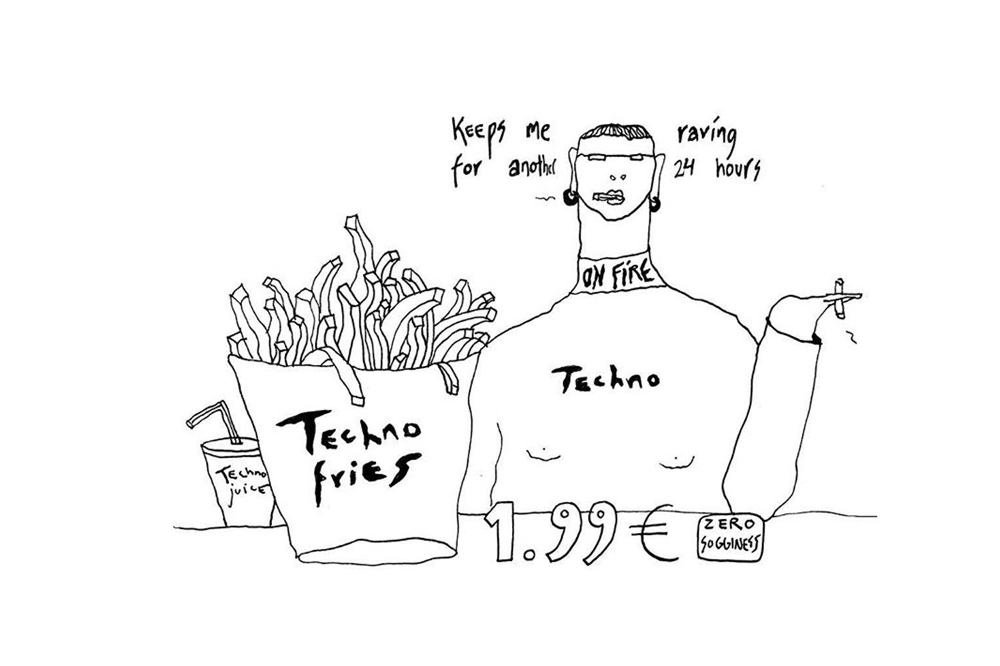
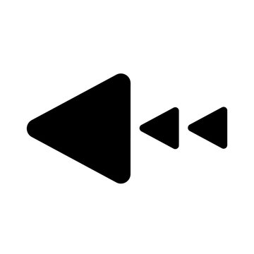

Sarah: I used Apple Music for a very short time until I started using Spotify back in high school. So, I've been using it for a while now. That was when it was still fairly new and just gaining traction. I think when Spotify came out, a lot of my friends were using it, and I was just kind of jumping on the bandwagon, yet this is an app I love using.
Mariia: What is it about Spotify that you love now?
Sarah: I think the streaming possibilities and the way that you can discover new music so easily. When I started using Apple Music, back then, that was like iTunes, right? Everything was done through iTunes and it's such an enclosed space. You don't really have any way to discover it outside of looking at what's trending, what's top 50. So, I think that's what I love about Spotify - there's a social aspect, there's a way to discover things and then streaming is so much easier.
Mariia: Are you the one who's listening to your favorites, or are you the one who is constantly in search for a good new thing?
Sarah: I think that's a bit of both. Like, I honestly, I spend so much time listening to music, and every Friday Spotify does a release radar for you. It looks at all your favorite artists and then checks if there's any new music coming from them. So, I think the algorithm gives you that convenience of finding new songs to listen to.
Mariia: You know people often get mad at the algorithms on social media, like I only see ads, I only see weird stuff. But with music, you actually appreciate the algorithm, which in fact works pretty good and somehow fits your taste.
Sarah: Well, I think one important factor is that I have the premium version. So, if you have Spotify for free there are ads. I've never really experienced that because I just got the premium version - I knew how much I would use the app. And for the algorithm with social media. I don't know about you, but when I am going through suggestions there are a lot of things I don't want to see, or they make me feel bad. Whereas with music, when they push it, it doesn't make me feel bad. If it's bad music and I'll just skip it. Also, if you are recommended a song, you can dislike it and then they won't recommend any more songs like this for you. Whereas I feel like if I do that on Instagram, I still get the same frickin videos.
Mariia: Do you feel like Spotify is a safer social space?
Sarah: I think the social aspect of Spotify is something I really like. I like that it's limited. Obviously, I'm not going to message my friends on Spotify, but it's cool to see what they're listening to. And I think I appreciate that it is a less intrusive form of social connections than let's say Instagram. A performative authenticity. I feel like the song that you're listening to is the song that you're enjoying at that moment in time.
Mariia: But there probably can be some social pressure, right? People may have a certain perception of you based on your taste.
Sarah: Yeah, I had that notion when growing up as a kid. I wanted to be alt, I wanted to be edgy. Like I don't listen to Taylor Swift, I don't like Carly Rae Jepsen. So, I definitely thought about that growing up. But then, I think once I got into high school, I guess I just didn't care about that as much, or maybe the type of music I was into was changing and evolving. Now I exclusively listen to electronic music. I don't really care if people can see that I'm just listening to electronic music.
Mariia: What is it that is special about electronic music for you?
Sarah: I think part of it is - I like the sound and I like there's something about electronic music that conceptually resonates with me as a designer. As a digital designer you can make everything with your laptop and with electronic music it's kind of the same idea. I just like the sound, like the concepts. I like going to raves.
Mariia: I want to end this with a request - please share your playlist.
Sarah: Yeah, I'll send it now! You should get Spotify, you know?
Mariia: I will, as soon as I get a job, lol.
 